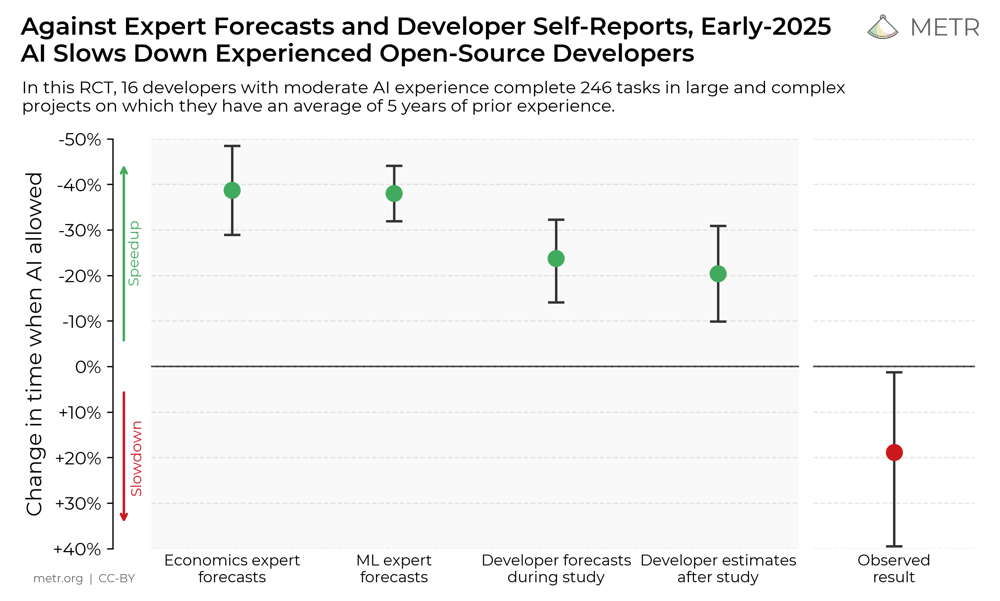

Vibe Coding vs Programmazione Tradizionale (2023-2025)

Abstract
Il vibe coding, che non è altro che un metodo di programmare guidati interamente dall’AI, si è diffuso tra il 2023 e il 2025 grazie a strumenti come GitHub Copilot, Cursor, Sourcegraph Cody, Tabnine, Codeium e assistenti AI integrati negli IDE.
In questo primo articolo voglio confrontare il vibe coding con l’approccio tradizionale (“old coding”) sulla base di studi recenti, casi aziendali ed esperienze degli utenti. I dati mostrano un quadro sfumato: in contesti controllati aziendali, l’AI pair programming può accelerare lo sviluppo (+26% task completati in media) soprattutto per sviluppatori junior, senza apparenti cali immediati di qualità. Questo penso sia quel dato che tutti raccontano e che anche tu che stai leggendo questo articolo conosci.
Tuttavia, ciò che probabilmente non conosci è che, in progetti complessi, sviluppatori esperti hanno riscontrato rallentamenti inattesi (si parla di addirittura +19% del tempo usando l'AI) nonostante la percezione di maggiore velocità.
Sul fronte qualitativo, il codice generato dall’AI funziona ma tende ad avere mantenibilità inferiore, a causa di duplicazioni, code churn raddoppiato e potenziali falle di sicurezza se usato senza supervisione. Per ovviare a questo problema iniziano a nascere tool, come Code Mender di cui ho già parlato in un precedente podcast.
Culturalmente, gli assistenti AI aumentano la soddisfazione dei developer riducendo i compiti ripetitivi, ma emergono preoccupazioni: i programmatori meno esperti rischiano di non sviluppare quella comprensione profonda del codice che caratterizza uno sviluppatore degno di essere chiamato tale, e una fiducia cieca nell’AI (“accetto tutto e via”) può portare a perdita del controllo e ad un codice opaco. In sintesi, il vibe coding offre velocità e accessibilità senza precedenti, ma richiede forte intervento umano in fase di architettura, revisione e test per garantire qualità, sicurezza e sostenibilità nel tempo.
Metodologia
In questa sezione voglio mostrare la metodologia di analisi degli studi su AI pair programming, evidenziando in primis i criteri di selezione e successivamente mostrerò un confronto tra le diverse fonti.
Per questa analisi sono state esaminate fonti pubblicate tra il 2023 e il 2025 in più lingue, privilegiando evidenze quantitative e riproducibili. In particolare:
- studi sperimentali peer-reviewed e white paper tecnici con metodologia chiara (RCT, benchmark). Questi sono stati considerati evidenza di grado A (alta solidità, basso rischio di bias);
- case study industriali con metriche reali su team (grado B se condotti internamente con possibile bias di contesto);
- testimonianze dirette di sviluppatori (blog, video, forum) che includono esperimenti concreti o codice verificabile (grado C in quanto aneddotiche, rischio bias medio/alto). Abbiamo estratto per ogni fonte dettagli su: contesto e tool usati, tipo di attività svolta (es. nuovo sviluppo, refactoring, bugfix, testing), metriche oggettive (tempo impiegato, percentuale di bug o vulnerabilità, copertura di test, performance) e metriche soggettive (soddisfazione, carico cognitivo, apprendimento percepito).
Durante la sintesi, le evidenze sono state incrociate per evidenziare convergenze o discrepanze. Ad esempio, si confrontano i risultati di un ampio RCT aziendale (4.800 sviluppatori in Microsoft/Accenture, evidenza A) con quelli di un RCT su sviluppatori OSS esperti (16 maintainer open-source, evidenza A), nonché con case study come l’adozione interna di Copilot in un’azienda (ZoomInfo, 400 ingegneri, evidenza B).
Sono state incluse esperienze individuali (es. prototipo full-stack sviluppato interamente con AI) come evidenza C per evidenziare aspetti pratici e culturali difficilmente rilevabili dai soli numeri. Tutte le fonti sono citate tramite link ai riferimenti originali.
Risultati Tecnici
Impatto su produttività e velocità di sviluppo (Copilot, Cursor, RCT multi‑azienda)
Dai dati emerge che gli assistenti AI possono accelerare lo sviluppo software, ma con distinzioni importanti per contesto e seniority del programmatore.
- RCT multi‑azienda (Microsoft, Accenture, altra multinazionale, 2024): con GitHub Copilot si osserva +26% di task completati in media, +13,5% di commit settimanali e +38% nella frequenza di compilazione. Lo studio non rileva impatti negativi sulla qualità (bug, review, build) → la velocità extra non avviene a scapito del funzionamento (IT Revolution – sintesi dello studio).
- Trial controllato Accenture (campione 120 dev, durata 6 mesi, contesto enterprise, 2024): +8,7% di pull request per sviluppatore, +15% di merge rate e +84% di build riuscite al primo colpo (minor attrito iniziale) (riepilogo metriche; vedi anche GitHub × Accenture).
- Dove accelera di più: compiti ripetitivi/boilerplate (CRUD, mapping, test scaffolding, integrazioni standard) e onboarding su codebase nuove; meno effetto su logiche di business complesse/inedite (necessaria guida e verifica umana) (GitHub × Accenture).
- Junior vs Senior: benefici più marcati per profili junior (adozione e accettazione suggerimenti maggiori); per i senior l’incremento è più contenuto e dipende dalla bontà dell’integrazione nel flusso di lavoro (MIT working paper – RCT).
Nota di contesto (OSS esperti): in un RCT indipendente su maintainer open‑source, l’uso di tool AI (Cursor/Claude) ha prodotto uno slowdown medio del +19% su 246 task reali, nonostante la percezione di speed‑up (~–20%). Tempo extra in prompting, revisione e adattamento all’architettura ha annullato i guadagni (METR – blog; arXiv; InfoQ).
Tabella riassuntiva (produttività/velocità)
| Metrica | Variazione con AI | Contesto/Fonte |
|---|---|---|
| Task completati | +26% | IT Revolution |
| Commit settimanali | +13,5% | IT Revolution |
| Frequenza di compilazione | +38% | IT Revolution |
| PR per sviluppatore | +8,7% | SecondTalent – Accenture |
| Merge rate | +15% | SecondTalent – Accenture |
| Build al primo tentativo | +84% | SecondTalent – Accenture |
| Tempo su task OSS complessi | +19% (più lento) | METR |
Qualità del codice e mantenibilità
Checklist & Guardrail Operativi:
- Attiva linter + formatter obbligatori (ESLint, Prettier, Black)
- Misura churn e duplicazioni con SonarQube o CodeClimate
- Inserisci slot di refactoring pianificati a ogni sprint
- Nomina code owners su directory critiche per mantenere coerenza
Se parliamo di qualità del codice prodotto, si apre un discorso un po' controverso: la funzionalità immediata del codice generato dall’AI è spesso buona, ma emergono problemi di mantenibilità nel medio termine senza un intervento disciplinato del programmatore. In termini di correttezza funzionale out-of-the-box, diversi studi indicano che il codice con AI può essere altrettanto valido di quello scritto a mano. Di seguito alcuni esempi emersi dalla ricerca:
Trend 2024–2025: analizzando la qualità interna e la manutenibilità, emergono trend preoccupanti legati all’uso massiccio dell’AI. Un white paper indipendente (Coding on Copilot, GitClear 2024) ha analizzato milioni di righe di codice su GitHub per misurarne l’evoluzione dopo l’introduzione di Copilot. Il risultato: il code churn, ossia la percentuale di codice che viene modificato o rimosso entro due settimane dalla sua creazione – è in forte aumento. (GitClear report); Visual Studio Magazine). Contestualmente, GitClear rileva un aumento del codice “aggiunto” e “copiato/incollato” rispetto a quello riorganizzato o cancellato. In altre parole, gli sviluppatori con AI tendono ad aggiungere nuove parti di codice (magari suggerite) invece di riutilizzare o modificare quelle esistenti, generando duplicazioni.
Un programmatore racconta la sua esperienza rivedendo un’app creata interamente via vibe coding: “sono rimasto scioccato da quanto fosse brutto il codice in molti punti. Sembrava scritto da tanti sviluppatori junior, ognuno con pratiche diverse”. In quell’app c’erano funzioni duplicate in moltissimi file e nessuna coerenza nello stile, rendendo arduo perfino tracciare i bug; alla fine lo sviluppatore ha deciso di gettare tutto e riprogettare l’architettura a mano prima di riusare l’AI, per evitare tale caos.
Lettura operativa: il vibe coding produce più codice più in fretta, ma senza guardrail (DRY, linters, design guide) aumenta l’entropia. Misurare churn/duplicazione, inserire slot di refactoring e code‑owner per coerenza.
Qualità “esterna” (funzionalità a breve termine)
- Studio GitHub 2022: il codice assistito da Copilot è riportato come più funzionale, leggibile e affidabile rispetto al controllo, in compiti standardizzati (studio di laboratorio) (GitHub Research – 2022).
- RCT 2025 (multi‑azienda): Nel grande RCT del 2025 citato prima, non sono state osservate differenze significative in bug o malfunzionamenti: i team con AI hanno mantenuto gli stessi standard di qualità apparente (test passati, review accettate) dei team tradizionali (sintesi IT Revolution.
- Testing: l’AI riduce il carico di scrittura test; fino a +38% di velocità nel creare unit test in case study enterprise (riepilogo Future Processing).
Tabella riassuntiva (qualità/mantenibilità)
| Indicatore | Evidenza | Impatto atteso | Fonte |
|---|---|---|---|
| Code churn | Fino a ~2× vs 2021 | Più rimaneggiamenti a breve; costi di manutenzione | GitClear |
| Duplicazioni | In aumento | Violazioni DRY, rischio bug speculari | GitClear |
| Acceptance suggerimenti | ~33% (suggestions) | Velocità ↑ ma richiede review | ZoomInfo |
| Acceptance LoC | ~20% (linee) | Output parziale/boilerplate | ZoomInfo |
| Qualità percepita | Variabile | Richiede standard e refactor ciclici | ZoomInfo |
In sintesi, il vibe coding tende a produrre più codice, più velocemente, ma con minore propensione al riuso e alla pulizia.
Mentre un sviluppatore umano esperto, scrivendo a mano, spesso riflette su come integrare la nuova funzionalità nel design esistente (magari refactoring parti di codice correlate), un AI su prompt genera una soluzione ex novo, ignaro di possibili duplicazioni o soluzioni analoghe già nel progetto.
Errori e sicurezza
Vorrei porre l'attenzione su un aspetto fondamentale da confrontare, ovvero l'incidenza di bug e vulnerabilità nel codice AI-driven rispetto al codice tradizionale.
Vorrei porre quindi questa domanda: il coding con AI porta a più errori o problemi di sicurezza? Le evidenze indicano che l’AI è abile nell’evitare errori sintattici/compilativi, ma può introdurre bug logici o vulnerabilità di sicurezza sottili se non controllata attentamente. In termini di bug funzionali, gli studi controllati finora non hanno segnalato tassi di bug significativamente più alti imputabili all’AI, anzi, come visto, inizialmente i build error diminuiscono e i test passano più facilmente grazie all’AI.
Tuttavia, diversi esperimenti mostrano che affidarsi ciecamente all’AI può indurre errori che un umano esperto eviterebbe. Ad esempio, modelli come GPT-4 tendono talvolta a “inventare” funzioni o chiamate non esistenti se il prompt è ambiguo, oppure a fornire soluzioni plausibili ma scorrette su edge case. Uno studio (Microsoft 2022) ha riscontrato casi in cui Copilot suggeriva soluzioni fuorvianti a problemi algoritmici, risolvendo il caso base ma sbagliando in situazioni limite – errori che uno sviluppatore attento avrebbe scoperto scrivendo i test. Per questo la letteratura raccomanda di non lasciare mai “volare l’AI da sola”: “Copilot è uno strumento potente; tuttavia non dovrebbe pilotare l’aereo da solo”.
Il programmatore deve restare nel loop per verificare la correttezza del codice, o meglio la logica "deep" del codice. A conferma, uno studio sull’uso di ChatGPT per compiti di programmazione universitaria nota che studenti inesperti tendevano a fidarsi dell’output anche quando conteneva errori: se il programma generato “non funzionava, semplicemente chiedevano all’AI di aggiustarlo di nuovo” senza comprendere il vero motivo. Questo può creare cicli dove un bug viene “corretto” dall’AI con un altro patch potenzialmente sbagliato, portando a errori nascosti di difficile diagnosi.
Sicurezza
La sicurezza del software merita un’attenzione particolare. Ammetto di aver condotto una deep research a riguardo ed emerge che il codice generato dall’AI spesso include vulnerabilità note o pratiche insicure, se l’utente non guida attivamente il modello verso soluzioni sicure.
Vulnerabilità note: secondo uno studio di Pearce et al., 2021/22 su 89 scenari CWE, il 39% dei programmi generati conteneva vulnerabilità e per i primi suggerimenti di Copilot il tasso era ~39% in Python e ~50% in C. Come se questo non bastasse, oltre 40% presentava almeno un punto debole (buffer overflow, injection SQL, hardcoded secrets, etc.).
Questo dato rivela che senza alcun filtraggio, l’AI tende a replicare pattern visti in training data anche se insicuri. Ad esempio, potrebbe suggerire una query SQL costruita tramite string concatenation (vulnerabile a injection) perché ha visto spesso codice così su GitHub, non sapendo che è una pratica pericolosa.
Vediamo insieme un caso comune, che mi ha visto protagonista. Non me ne vanto, anzi, tuttora penso a come io abbia fatto ad essere a poco dal pubblicare una cosa del genere: API key lasciate nel codice. Chi mi conosce un minimo sa che una delle prime cose che faccio è proprio creare un file .env. Ma quella volta preso dalla fretta per un imprevisto, mi sono trovato a fare tutto in vibe coding e ad esporre quindi l'API Key a frontend.
Va detto che gli assistenti AI stanno migliorando: Copilot e Cursor ora tentano di riconoscere e avvisare su pattern insicuri noti, e strumenti come CodeQL possono essere integrati per scansioni automatiche post-generazione.
Un fenomeno interessante emerso da uno studio del 2025 è la “degradazione iterativa” della sicurezza (Security Degradation in Iterative AI Code Generation): quando uno sviluppatore fa iterare l’AI più volte su un pezzo di codice per migliorarlo, magari alternando prompt di efficienza e aggiunta di funzionalità, possono comparire nuove vulnerabilità inattese. Nel test, dopo 5 iterazioni di miglioramenti richiesti a GPT, le vulnerabilità critiche nel codice sono aumentate del +37,6%. Ciò sfida l’assunto che iterare con l’AI affini automaticamente il codice: senza supervisione umana attenta, ogni “miglioria” automatica può introdurre un nuovo problema di sicurezza altrove. Questo rafforza la raccomandazione che l’expertise umana in sicurezza rimanga nel loop.
In conclusione, come leggevo su un articolo di Bob Chen, la best practice emersa è trattare l’AI come un junior developer molto veloce ma potenzialmente sprovveduto. Ovvero, mai fidarsi ciecamente, fare sempre peer review del codice generato, passare scanner di sicurezza (es. OWASP ZAP, Snyk).
Performance e scalabilità
Un ultimo confronto tecnico riguarda le prestazioni runtime e la scalabilità dei sistemi creati principalmente via AI rispetto a quelli progettati tradizionalmente. Le evidenze indicano che il vibe coding spesso privilegia la soluzione funzionante più semplice, trascurando ottimizzazioni che invece i developer esperti implementerebbero per scalare.
Ti voglio portare un esempio che ho letto su Medium. Qui l'autore racconta di aver generato un blob JSON da 39 MB lato client, che ovviamente ha mandato in crash il browser. Il focus che lui pone è sul fatto che "l’AI non ha capito” che quell’approccio non era scalabile, mentre lo sviluppatore umano l’ha riconosciuto immediatamente.
Quello che voglio dire con questo esempio è in generale, architetture create “improvvisando” con l’AI tendono a essere monolitiche e poco modulari. Il modello non impone separazione in servizi, non pensa a code asincrone, caching (Redis), streaming (WebSocket/SSE) e backpressure, a meno che l’utente non lo istruisca espressamente. Ciò significa che un progetto nato via vibe coding può funzionare bene per un numero limitato di utenti o request, ma sotto carico elevato mostra inefficienze gravi, richiedendo spesso una riprogettazione. Un effetto osservato è che il tempo risparmiato inizialmente potrebbe essere perso dopo per scalare l’applicazione: “il codice creato ‘winging it’ con AI va bene per una demo veloce, ma quello stesso codice potrebbe non reggere in produzione sotto carico, richiedendo refactoring massiccio a posteriori”
Detto questo, va riconosciuto che l’AI può anche aiutare a ottimizzare se usata bene: per es., può suggerire vectorization di un loop o indicare la complessità di un algoritmo se interrogata. Inoltre, col maturare dei modelli e il fine-tuning su performance, è plausibile che in futuro gli assistenti evidenzieranno essi stessi i colli di bottiglia (es: “questa funzione ha complessità $O(n^2)$, potresti usare un indice per migliorare”).
Lo rimarco ancora una volta se non si fosse capito: il modello vincente è ibrido: l’AI crea rapidamente una base funzionante, poi sviluppatori esperti profilano e ottimizzano dove serve, come farebbero su codice scritto da uno sviluppatore junior.
Riassumendo i risultati tecnici: il vibe coding sta oggettivamente rivoluzionando la velocità di scrittura e la comodità (meno effort manuale su un gran numero di compiti), ma non garantisce qualità che definirei “strutturale” del prodotto finale. Il codice AI-driven tende ad essere più verboso e ridondante, richiedendo successivamente una fase di pulizia/ottimizzazione maggiore rispetto al codice pensato dall’inizio con metodo tradizionale.
Con le dovute pratiche di controllo (review, refactoring, test intensivi), team ben organizzati possono mitigare questi difetti e sfruttare il meglio dei due mondi – ma senza tali controlli il rischio è di ottenere “un castello di sabbia in riva al mare in Sardegna" Magari sta su fino a quando non inizia a soffiare Maestrale. Poi cadrà come corpo morto cade.
Prima di concludere ci tengo a parlare di una cosa di cui in pochi parlano ma effettivamente è poco tecnico e oggettivo
Soddisfazione degli sviluppatori
L’AI toglie di mezzo molte parti noiose o frustranti. Leggevo giusto ieri che il 70% ha riportato minore sforzo mentale nei task ripetitivi, e oltre la metà ha ridotto il tempo passato a cercare informazioni su Stack Overflow o documentazione. Potendo delegare all’AI la scrittura di boilerplate o la ricerca di sintassi, gli sviluppatori si concentrano su aspetti più creativi o interessanti e questo migliora l’engagement.

Figura 1: andamento della soddisfazione degli sviluppatori nell’uso di AI coding assistant (fonte: METR).
Detto ciò, esistono anche voci critiche e resistenze culturali all’uso indiscriminato dell’AI. Alcuni sviluppatori, specialmente i più senior o meglio li definirei puristi, manifestano frustrazione verso l’eccessiva enfasi sull’AI.
Ad esempio, leggendo alcune discussioni comunitarie pubbliche, gli sviluppatori indicano che parte della comunità teme che gli IDE stiano diventando sovraccarichi di funzionalità AI a scapito della stabilità di base (“non voglio la tua AI, voglio un IDE che funzioni bene” è una ref tradotta apparsa online). JetBrains ha affrontato critiche quando il suo assistente AI, lanciato nel 2023, ha ottenuto recensioni negative (rating 2.3/5) dovute a bug e intralci percepiti nel flusso di lavoro tradizionale.
Ciò suggerisce che non tutti gli sviluppatori trovano utile l’AI allo stesso modo: chi lavora in maniera molto metodica e approfondita su problemi complessi può vedere l’AI come una fonte di distrazione o addirittura ho visto nutrire una sorta di sfiducia nelle sue soluzioni.
Altri temono di perdere il controllo sul codice (io sono tra quelli, ma dopo vi dico la soluzione che spesso uso): se l’AI scrive gran parte, lo sviluppatore sente di non “possedere” più la comprensione completa. Questo può generare ansia professionale, specie nei programmatori che tengono alla qualità "artigianale" (chiamiamola così dai) del proprio lavoro. Tuttavia, il trend generale sembra essere l’accettazione: man mano che gli strumenti migliorano e i developer imparano a guidarli, anche i tradizionalisti iniziano a integrarli nei propri processi, magari limitandosi alle feature che trovano più utili come completamenti automatici brevi, riassunti di codice, etc.
Io spesso per riprendere il controllo chiedo, dopo ogni feature creata in Cursor, un file markdown che mi spiega le feature implementate (o l'intera app), qual è lo scheletro del codice che ha creato e perché ha fatto determinate scelte. Ammetto che non è la soluzione definitiva, però spesso mi ha aiutato.
Torniamo a noi. In ambito open-source, un dibattito culturale acceso riguarda l’uso di AI per contribuire ai progetti.
Da un lato, leggevo su Reddit che GitHub ha reso Copilot gratuito per i maintainer OS per incentivarne l’uso, convinta che questo aumenti la produttività. Dall’altro lato, alcuni maintainer hanno espresso preoccupazione per Pull Requests generate dall’AI potenzialmente di bassa qualità: richieste di funzionalità o fix generati via ChatGPT senza un minimo di ragionamento da parte dell'umano. Pensate che c’è stato persino un appello di maintainer per avere la possibilità su GitHub di bloccare contributi generati da AI se non conformi. Questo denota una tensione tra la quantità (molti contributi rapidi via AI) e la qualità/controllabilità in comunità collaborative.
Alcuni progetti hanno iniziato a richiedere che i contributor dichiarino se hanno usato AI per generare il codice, un po’ come indicazione per i revisori di porre extra attenzione. Culturalmente, quindi, se in azienda l’AI è caldeggiata dal management (anche perché vista come aumento di produttività e riduzione costi), nelle comunità open-source e in generale tra gli sviluppatori emerge la necessità di nuove norme e linee guida su come utilizzare correttamente questi strumenti senza compromettere gli standard.
Formazione, competenze e impatto sui ruoli
Apprendimento
Probabilmente la questione culturale più discussa è: come influisce il vibe coding sull’apprendimento e sulle competenze dei programmatori? Ho sentito persone enfatizzare il rischio di avere sviluppatori che sanno solo “promptare” l’AI senza capire davvero il codice. Sarà vero?
Dai vari resoconti, il rischio c’è, ma direi che è mitigabile.
Un post diventato virale, “New Junior Developers Can’t Actually Code” di Namanyay Goel (2025), sostiene che sta emergendo una generazione di nuovi dev che scrive codice più velocemente che mai grazie all’AI, ma senza capire davvero cosa sta facendo. L’autore, un tech lead, racconta di giovani assunti che hanno Copilot/ChatGPT sempre attivi e che consegnano feature apparentemente funzionanti; ma alle domande “Perché il tuo codice fa così?” non ottiene risposta. Ne approfitto anche per consigliare questa lettura dello stesso autore.
Torniamo al primo articolo. Goel osserva che manca quella conoscenza di base che una volta si costruiva “struggendo” sui problemi: molti non sanno spiegare alternative possibili o il ragionamento dietro il codice, perché si sono limitati ad accettare la soluzione suggerita dall’AI. Questo porta a comprensione superficiale e dipendenza dall’AI per debug: se qualcosa non va, invece di introspezione, i giovani sviluppatori chiedono di nuovo all’AI di risolvere. In contesti educativi, ho letto che alcuni docenti universitari confermano fenomeni simili. Ovvero, studenti che con ChatGPT consegnano compiti apparentemente corretti ma non sanno rispondere a domande semplici sul perché del codice (sintomo che non l’hanno scritto di proprio pugno né compreso a fondo).
Sia chiaro, non sono contro. Anzi!
L’AI può anche essere uno strumento didattico potente se usato con criterio. Ad esempio, un junior può chiedere all’AI di spiegare un pezzo di codice, di fornire esempi o di suggerire come risolvere un bug, ottenendo risposte immediate e adattive (cosa che StackOverflow non faceva). Alcuni sviluppatori raccontano di aver colmato lacune più velocemente grazie all’AI: invece di cercare su Google, ottenevano mentoring istantaneo. La differenza principale è secondo me l’atteggiamento dell’utente: se il programmatore usa l’AI in modalità apprendimento, ovvero chiedendo “perché”, verificando attivamente le risposte, provando varianti, può imparare molto in breve tempo. Al contrario, se usa l’AI in modalità pilota automatico, limitandosi a incollare soluzioni, imparerà pochissimo. Sempre Goel in un suo articolo da consiglio per i profili junior: “usate Copilot/ChatGPT, ma con moderatezza: interrogate le soluzioni, studiate i perché, cercate di ricostruire il ragionamento”.
Alcuni percorsi educativi iniziano a integrare l’AI non come scorciatoia per fare meno, ma come strumento per fare di più e meglio: ad esempio generare rapidamente diversi approcci a un problema e poi analizzarli con l’insegnante. Oppure io personalmente ormai sono solito creare dei percorsi di formazione (per me o per altri) dopo un bel brainstorming con ChatGPT. Quello che ho visto è che i tempi non sono affidabili, ma il percorso da seguire è spesso super sensato.
Tornando ai contesti aziendali, i mentor senior secondo me hanno una responsabilità incredibile, in quanto sono chiamati a guidare i junior su come usare l’AI responsabilmente per evitare "skill atrophy" (non so se questo termine esiste in italiano e preferisco evitare di tradurlo). Questo include fare pair review dove il senior chiede al junior di spiegare il codice generato, oppure impostare policy in cui il junior deve provare a implementare qualcosa da sé prima di chiedere all’AI, in modo da allenare il problem solving umano.
Da qui nasce anche un cambiamento nel mentoring: i senior devono affiancare i junior non più solo nel coding tradizionale, ma nel prompt engineering e nel controllo qualità del codice AI. Alcune imprese stanno formalizzando linee guida, ad esempio: se un junior genera codice con Copilot, deve farlo rivedere a un senior con occhio critico, come parte del code review standard. Invece di commentare solo lo stile o la logica, il senior deve anche insegnare al junior perché magari una soluzione “troppo facile” suggerita dall’AI non è ottimale. Ti faccio un esempio semplicissimo: “Copilot ti ha duplicato questa logica in 3 punti, dovresti estrarla in una funzione comune per facilitarne la manutenzione”. Oppure: “Attento, ChatGPT ha importato questa libreria da un esempio obsoleto, ma non è adatta in produzione per ragioni di performance”. Questo tipo di insegnamento meta-cognitivo diventa fondamentale per far crescere le competenze nonostante la presenza dell’AI.
Identità professionale
Ultimo ma tutt'altro che meno importante, c’è l’aspetto della dipendenza psicologica e identitaria. Scrivere codice “a mano” per molti sviluppatori non è solo un lavoro, ma una passione e un’arte. L’arrivo di assistenti AI in grado di generare codice ha scosso questa identità: ho parlato con alcuni sviluppatori che mi hanno espresso il timore di “diventare solo operatori che guidano l’AI” invece che craftsmen. C’è chi parla di loss of craftsmanship, paragonandolo ad altre automazioni industriali dove il ruolo umano passa da artigiano a supervisore di macchine. Tuttavia, vedo questi assistenti come un amplificatore delle capacità umane, non un sostituto. Un po’ come l’introduzione dei computer stessi rispetto alla programmazione con schede perforate. Se non sbaglio all’inizio c’era chi storceva il naso, no? Ad oggi penso che nessuno tornerebbe indietro. La chiave per mantenere vivo l’aspetto craft è che gli sviluppatori si concentrino sui livelli più alti di astrazione e design, lasciando all’AI i dettagli implementativi routinari. In tal modo, il craft non muore, si sposta: dal scrivere ogni for loop manualmente, al plasmare un sistema intero orchestrando AI e codice umano in modo coeso. Come scrive Greenman, “l'AI esegue il codice brillantemente. Gli umani architettano sistemi che funzionano”. In altre parole, la soddisfazione professionale può ancora derivare dall’aver progettato bene un sistema, anche se molte linee di codice sono state partorite dall’AI.
Sintesi e raccomandazioni
Siamo arrivati al termine e il confronto tra vibe coding e sviluppo tradizionale può essere riassunto così: il vibe coding offre velocità ed accessibilità che definirei a dir poco rivoluzionarie, mentre il metodo tradizionale assicura controllo, robustezza e chiarezza. Invece di proclamare un vincitore assoluto, le evidenze suggeriscono che un approccio ibrido e strategico massimizza i benefici minimizzando i rischi. Di seguito, in punti, le conclusioni principali e raccomandazioni operative:
Produttività: L’uso dell’AI-driven coding accelera lo sviluppo in molti scenari, specialmente per compiti ripetitivi e per sviluppatori meno esperti.
Qualità e mantenibilità: Il codice generato dall’AI deve essere trattato al pari di quello scritto da un junior dev: richiede revisione, refactoring e testing diligenti. Si consiglia di non committare codice AI senza verifica: integrare obbligatoriamente un giro di code review umana su tutto il codice generato. In pratica, mantenere alti standard di clean code: nominare un “AI code custodian” nel team che monitori la coerenza stilistica e architetturale del codice prodotto con AI.
Sicurezza: Mai presupporre che il codice generato sia sicuro. Implementare pipeline di security review su tutto il codice, specialmente se generato automaticamente. L’AI può velocizzare l’implementazione, ma la sicurezza by design deve essere reintrodotta dallo sviluppatore.
Architettura e performance: Prima di lanciare un progetto con vibe coding allo sbaraglio, investire tempo in una progettazione di massima tradizionale: definire moduli, interfacce, decisioni architetturali chiave. Questo può prevenire il caos eterogeneo che l’AI altrimenti genererebbe.
Crescita dei developer: Implementare linee guida per usare l’AI in modo formativo. Ad esempio, incentivare i junior a chiedere all’AI spiegazioni (“spiegami il codice che hai proposto”) e non solo soluzioni, così da capire i concetti. Fare sessioni di coding congiunte dove un senior e un junior usano l’AI insieme, discutendo i pro e contro dei suggerimenti. Secondo me questo è un buon modo che trasferisce conoscenza tacita. Mantenere attività kata di programmazione senza AI occasionalmente, per allenare le capacità fondamentali e far emergere lacune. In sede di code review, porre domande ai coder (soprattutto se junior) per assicurarsi che abbiano compreso il codice AI che presentano. L’obiettivo è prevenire la “calma apparente” di team che consegnano feature ma poi non sanno correggere un bug perché nessuno capisce davvero il codice generato. Lo ribadisco. Mentorship e pairing sono secondo me cruciali (probabilmente è la mia natura di AI adoption specialist :)): l’AI non sostituisce il bisogno di spiegare il perché e il cosa ci sta dietro.
Concludo dicendo che secondo me il futuro della programmazione appartiene ai developer che sanno sfruttare il pilota automatico quando la guida è noiosa e standard e che sanno tenere saldamente i comandi dell'auto nei momenti in cui serve attenzione.